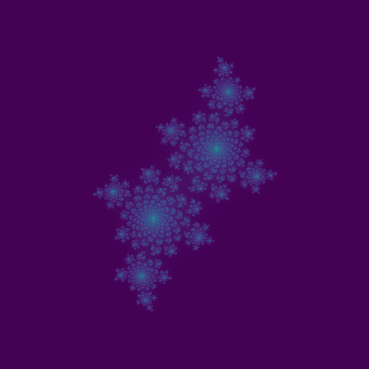

Markdown
Thinking Machines
Why Markdown?
What is Markdown (.md)?
- A way of writing text and styling text that can be read with or without a markdown editor.
- A lightweight alternative to HTML.
- Probably the foremost standard for documentation in scientific computing.
Different “.md”
- Markdown is a fairly open standard, and not all Markdown is exactly the same, but tends to follow common rules.
- I will teach GitHub Markdown, a major but not the only standard.
- These slides are generated in Quarto Markdown, an extension of the standard.
- Dillinger and Obsidian are popular Markdown platforms.
What is the relation to GitHub?
- By convention, every GitHub repository should come with a README.md file.
- By default, GitHub will style this and display it on the main repository page.
- This is how you should communicate to anyone who discovers your code or is looking for your code what the code does.
Conceptualizing
- Suppose you are describing some code, like
tax.py- You may wish to link to primary source documents on tax policy.
- You may wish to create paragraphs, unnumbered and numbered lists.
- You may wish to embed images, code snippets.
- You may wish to use rich bold or italic text.
Problem Solving
- Markdown
- Uses existing, common typographical characters
- Corresponds to widely standardized HTML
- Is human-readable without being rendered in HTML
- Can be:
- Written in any text editor.
- Authored in a dedicated Markdown editor.
Stepping Back
gitwas made to solve this exact problem!- The world leading scientific computing operating system, Linux, was being developed remotely via volunteers.
- They used millions of lines of code in complex file structures.
- They had to have a way to keep track of everything!
We will
- Introduce Markdown syntax:
- Style text
- Link to resources
- Use “Markdown” to:
- Document our code with Markdown
Documentation
- Previously, we learned about comments.
- Lines in code that do not affect what the code does, but help human users understand it.
- Often we document repositories with README files.
- Often as
README.md, a “Markdown” file.
- Often as
- We introduce Markdown.
Text
A note
- These slides are written in Markdown.
- I’ll show the Markdown in a left column and how it is rendered. on the right.
- If you wish to follow along, the most obvious way is https://dillinger.io/
Text
- The most natural thing to do in a
README.mdis simply write text.
Unremarkable text.Unremakrable text.
Bold
- Enclose text in double
**, double__or HTML style<b>to bold text.
We can make text **bold**.
We can make text __bold__.
We can make text <b>bold</b>.We can make text bold.
We can make text bold.
We can make text bold.
Italic
- Enclose text in single
*, single_or HTML style<i>to italicize text.
We can make text *italic*.
We can make text _italic_.
We can make text <i>italic</i>.We can make text italic.
We can make text italic.
We can make text italic.
Strikethrough
- Very helpful to show what not to do.
We can make text ~strikethrough~ sometimes.
We can make text ~~strikethrough~~.
We can make text <s>strikethrough</s>.We can make text strikethrough sometimes.
We can make text strikethrough.
We can make text strikethrough.
Nesting
- As a rule, formatting can be nested but not overlapped.
__Bold__, *italic*, or ***both***.
__Bold, *nested,*__ or *italic*.
__Can't be *overlapped__, however*.Bold, italic, or both.
Bold, nested, or italic.
__Can’t be *overlapped__, however*.
Sub/superscript
- In scientific publication, we often require subscripts and superscripts.
Squaring *x* as *x*<sup>2</sup> or *x*^2^
Denoting a Helium-3 isotope as He<sub>3</sub> or He~3~.Squaring x as x2 or x2
Denoting a Helium-3 isotope as He3 or He3.
When .md fails
- A number of of formatting options require the heavier-weight HTML tags.
Underlining is <u>rarely</u> used.
Some editors support ==.md== or <mark>HTML</mark> highlighting.Underlining is rarely used.
Some editors support ==.md== or HTML highlighting.
Quotes
Blockquotes
- Quotes are used frequently in Markdown, for various reasons.
- When quoting another writer, or a source, often use blockquotes:
> Veni, vidi, vici.
<blockquote>Oṃ maṇi padme hūm̐</blockquote>
Veni, vidi, vici.
Oṃ maṇi padme hūm̐
Unicode
- We note Markdown generally supports unicode characters as well as anything else does - usually exactly as well as your browser.
> ॐ मणि पद्मे हूँॐ मणि पद्मे हूँ
Backticks
- The backtick character
`(near~) has special meaning in Markdown.
Single back for `print('hi')`
Use triple backtick for:
```
for i in range(10):
print(i*i)
```Single back for print('hi')
Use triple backtick for:
for i in range(10):
print(i*i)Syntax Highlighting
- Often we want codeblocks to have highlighting as we see in a code editor.
- Specify the file extension immediately after the opening triple backtick.
```py
def ten_sqs():
for i in range(10):
print(i*i)
return
```def ten_sqs():
for i in range(10):
print(i*i)
return- In Quarto Markdown, this also changes background (this is non-standard).
Lists
Better than sentences
- As a rule, it’s a good idea to break text up.
- Note that
*or-work and linebreaks don’t break the list.
- Use lists.
- Be concise.
* Use bullets.
* Save space.Use lists.
Be concise.
Use bullets.
Save space.
Nesting
- Lists can be nested via indentiation with whitespace.
- Lists are great!
- Easy to read.
- Either as markdown or text!
- Easy to type.
- Try them out! - Lists are great!
- Easy to read.
- Either as markdown or text!
- Easy to type.
- Easy to read.
- Try them out!
Numbering
- Lists are numbered automatically.
1. One
1. Two
1. Three
1. Four
1. Four and half
1. Five- There is no graceful way to start a list at zero.
- One
- Two
- Three
- Four
- Four and half
- Five
Task lists
- You can also make “task lists”.
- Try clicking those boxes!
- [x] Open the door
- [ ] Get on the floor
- [ ] Walk the dinosaurLines
Line breaks
- There’s a few ways to perform a .md line break.
Two spaces
break lines
one space
does not.Two spaces break lines
one space does not.
Line breaks
- Invisible line breaks are very annoying and
\is often preferred.
Back slash\
breaks lines
just like
two spaces.Back slash
breaks lines. just like
two spaces.
Line breaks
- These work inside lists.
- Some items\
are long.
- Some aren't.- Some items
are long. - Some aren’t.
HTML
- The HTML
<br/>will often works as well.
Even in the middle<br/>of lines.Even in the middle
of lines.
Links
URL links
- As a rule, you can link anywhere on the internet.
- Place the link text in
[]and the URL in()
[Read more](https://en.wikipedia.org/wiki/Markdown)Images
- Use
![]before a link to an image file, like a.png,.jpg, or.svg.

Relative Links
- Within a GitHub markdown document, you can also link to images within the repository.
- This
.mddocument is in/main/qmd/src/so I can just use:

Footnotes
- Generally, by the time you are using footnotes you should switch to a different platform (LaTeX).
- But they exist!
Sections
Headings
- In my markdown, headings correspond to slides or sections.
- They are
#prefixed and get their own line.
# HeadingHeading
Subheadings
- In my markdown, headings correspond to slides or sections.
- They are
#prefixed and get their own line.
## Subheadings
### Get
#### Progressively
##### SmallerSubheadings
Get
Progressively
Smaller
Links
- We can link to sections using all lowercase (and replace spaces with
-)
The previous heading was [Links](#links) part of the notes.The previous heading was Links part of the notes.
Callouts
Optional Features
- Some editors support callout blocks.
> [!NOTE]
> GitHub note.
::: {.callout-note}
Quarto note.
:::
> 📝 **Note:** Blockquote/emoji hack.[!NOTE] GitHub note (doesn’t work here).
Quarto note.
📝 Note: Blockquote/emoji hack.
Tables
Markdown DataFrames
- The way pandas worked under the hood on these slides was actually outputing markdown tables.
|NumPy|**pandas**|
|-----|----------|
|array|DataFrame |
|typed|Any values|| NumPy | pandas |
|---|---|
| array | DataFrame |
| typed | Any values |
Markdown Arrays
- You can leave out headers to get something closer to an unlabeled table or a 2D array.
| | |
|-----|----------|
|9275 | 10 |
|37500| 15 || 9275 | 10 |
| 37500 | 15 |
Align text
|Left, | center, | right! |
|:-----|:-------:|-------:|
|Text | x | 13 |
|Names | | 113 || Left, | center, | right! |
|---|---|---|
| Text | x | 13 |
| Names | 113 |
Exercise
GitHub Skills
- Complete the GitHub Skills lesson "[Communicate using Markdown](https://github.com/skills/communicate-using-markdown)"
- Add a README.md to your repository from the [Git exercise](04_git.qmd#exercise)- Complete the GitHub Skills lesson “Communicate using Markdown”
- Add a README.md to your repository from the Git exercise